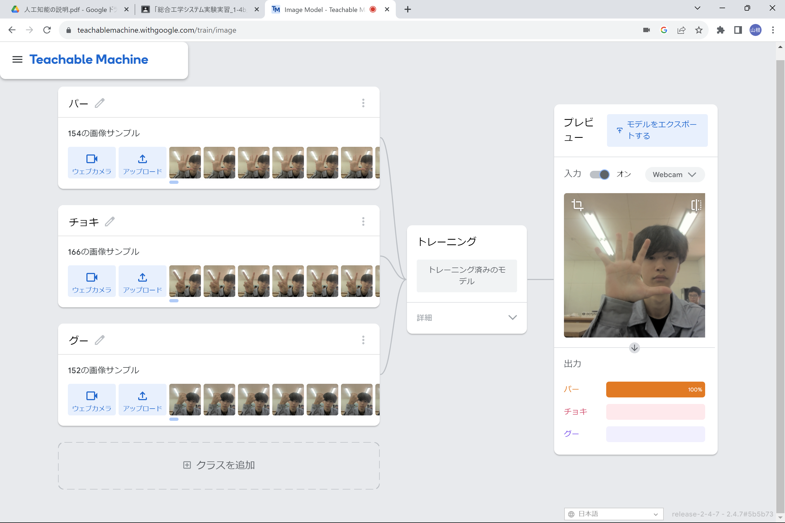
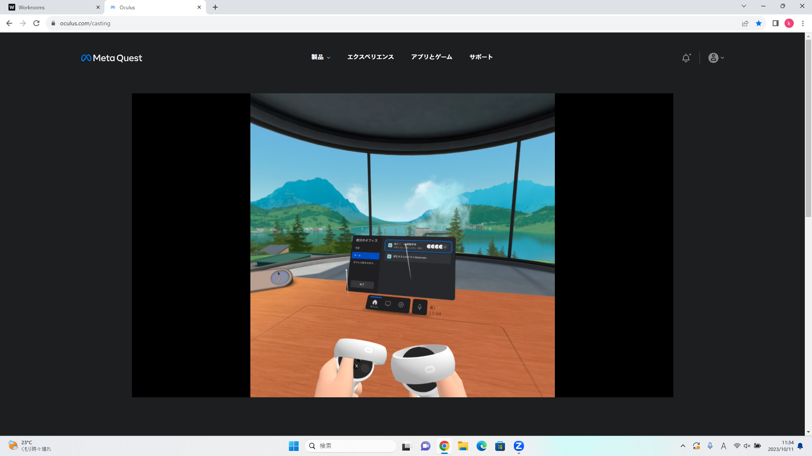

第2週目
2-1 １週目のレポートをHTMLで作る
１週目のレポート
1.内容
スクラッチを用いたサイエンスアート、落下するリンゴをキャッチするゲーム、初のホームページ作成に関する感想が載っているホームページ。
2.感想
自分が打ち込んだ内容がしっかりとサイトに反映されたときは、非常にうれしい気持ちになった。また、授業以外で自らホームページを作ってみたいと思った。
2-2 機械学習体験

1.内容
じゃんけんで用いるグー、チョキ、パーを自動で判断してくれる人工知能。
2.感想
人工知能について、私はこれまで難しく、複雑な物だと思っていました。ただ、teachable machineを用いることで簡単に人工知能に触れることができるということを知ることができました。また、グーやチョキに比べるとパーは認識が速いことが分かった。私は、パーの形がはっきりしていることから認識しやすいのだと考えた。
2-3 VR（バーチャルリアリティー：Virtual Reality）会議室の体験

1.内容
VRゴーグルで仮想空間を体験する。
2.感想
初めてVRゴーグルをつけ、仮想空間を体験しました。非常に楽しく、印象に残っています。手を動かせば、アバターの手も連動して動くということに感動しました。VR空間内のガラス張りの部屋が綺麗であったためことから、この技術があれば家の中で外に旅行することも可能なのではないかと感じました。VRでの楽しみ方は無限大だと感じました。